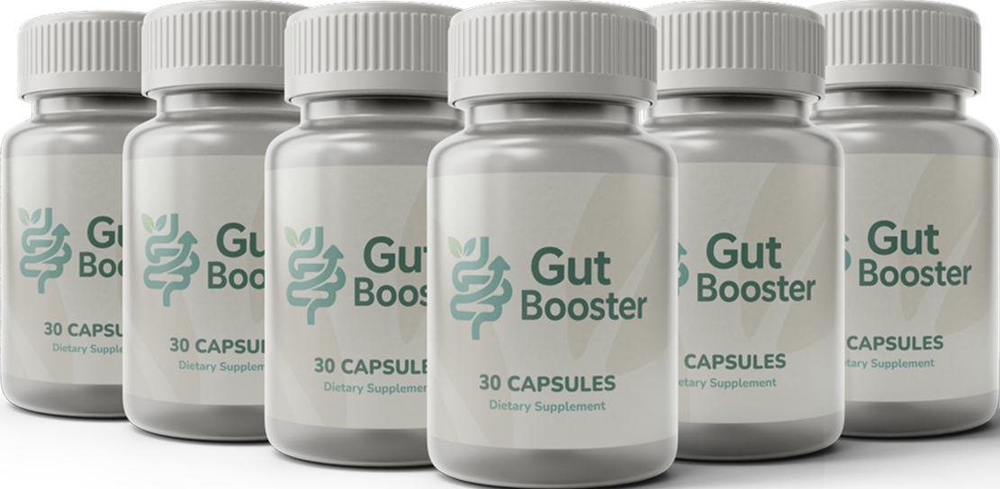
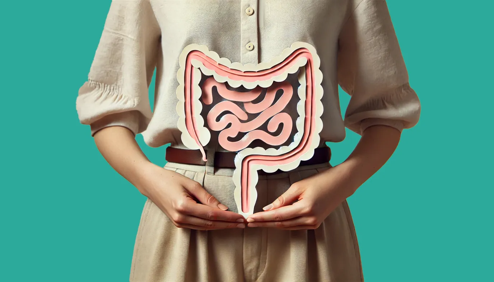
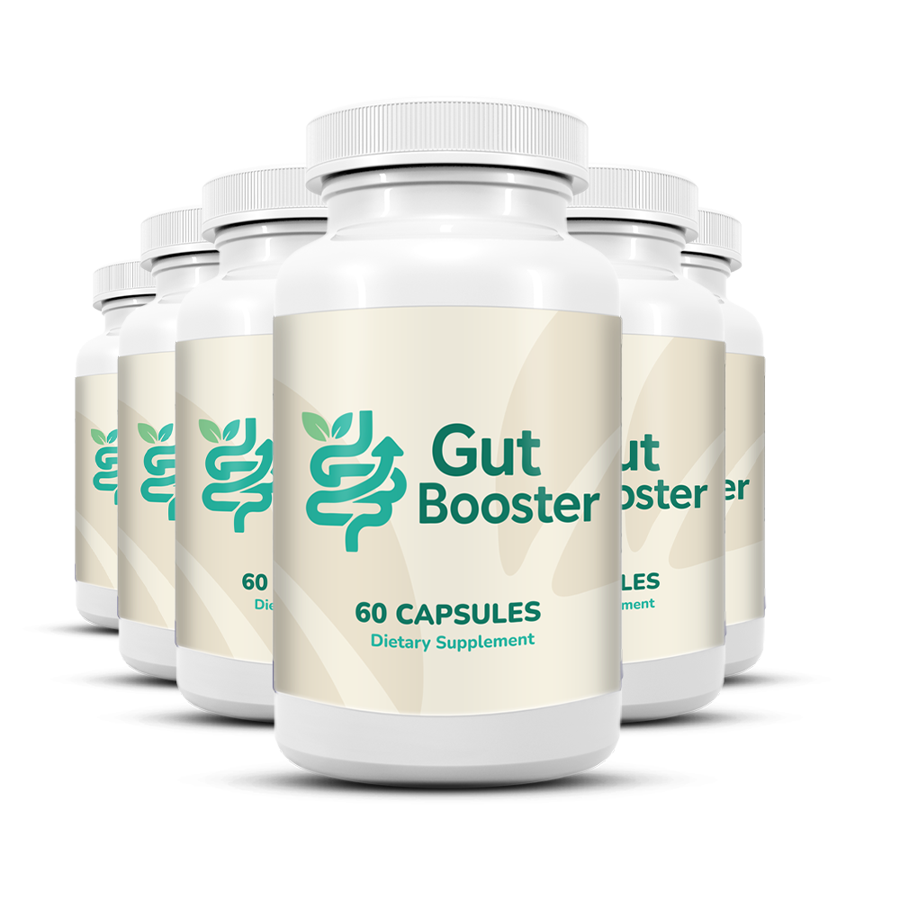

You're just moments away from finally feeling lighter, leaner, and more in control of your body — but there's one critical piece of the weight-loss puzzle that almost nobody talks about.
Before your Burntide order is finalized and ships out, there's something vital you need to understand. Even with the right metabolic support, a silent second issue may be holding back the fat-burning, energy, and slim-waist results you're hoping for.
Let's be honest — you made a smart move by investing in Burntide. You want to wake up feeling lighter. You want to look in the mirror and finally like what you see. You want to fit comfortably into your favorite clothes again, enjoy meals without bloating, and walk into a room with confidence.
But here's the part most people never hear… what if a big chunk of what's slowing your progress isn't about your metabolism at all?
It sounds strange, but it's one of the most overlooked pieces of how the body manages weight…
One piece many weight-loss supplements overlook:
Stubborn belly fat, slow metabolism, and cravings may have an additional source many people overlook — an imbalance in the gut microbiome — not from willpower, food choices, or activity level alone.
The bloating. The cravings that hit out of nowhere. The "stuck weight" that won't budge no matter what you eat. The afternoon energy crashes. The stubborn belly that refuses to go down. These aren't always metabolism signals — in many cases, they're your gut bacteria firing the wrong signals to your brain in response to years of inflammation, processed food, and microbial imbalance.
It doesn't matter how powerful your fat-burning supplement is — if the bacteria in your gut are out of balance, inflamed, or starved of the right fibers, you'll still feel sluggish. You'll still struggle with cravings. You'll still feel like something's "off."
Reference: Turnbaugh PJ et al., "An obesity-associated gut microbiome with increased capacity for energy harvest," Nature, 2006. (Confirmed and expanded in Le Chatelier E et al., Nature, 2013.)

Let that sink in. Even when you're supporting your metabolism perfectly, the signals you feel every day — the cravings, the bloating, the stubborn belly fat, the energy crashes — may be coming from a completely different system your weight-loss supplement can't reach.
That says it all. The problem may not be your metabolism — it's the bacteria living in your gut.
Could your Burntide results be masked by an unbalanced gut?
Burntide is a powerful metabolic support formula — but your metabolism doesn't exist in isolation. Every calorie you eat, every nutrient you absorb, and every hormone that controls hunger and fat storage is influenced by the trillions of bacteria living in your gut.
When those bacteria are imbalanced, inflamed, or starved (which happens naturally with age, stress, and modern diets), they extract more calories from food, trigger constant cravings, and send hunger signals to your brain — even when your body has had enough.
That means the progress Burntide is making in your metabolism may not fully translate into how your body looks and feels… all because of one overlooked system.

What happens when your gut isn't supported:
- Real metabolic improvements get masked by ongoing bloating and water retention
- Cravings, hunger spikes, and sugar urges continue even as fat-burning improves
- You feel "better" but not "great" — stuck at partial results
- Your body keeps storing fat because of inflammation signals from the gut
It's frustrating — but it's fixable. In fact, this is exactly why some people experience a full body transformation on weight-loss support while others feel only a fraction of what's possible.
Is your gut the hidden reason your weight loss still feels stuck?
Ask yourself honestly:
- Do you feel bloated or "puffy" even on days you eat clean?
- Do you experience strong cravings — especially for sugar, bread, or carbs — that feel impossible to control?
- Do you feel sluggish, foggy, or low-energy after meals?
- Do you struggle with irregular digestion, gas, or stomach discomfort?
- Are you over 40, or have you been dieting on and off for more than 2 years?
If you answered "yes" to even one — your body is telling you something important. These aren't random symptoms. They're your gut asking for support. And until you give it what it needs, even the best metabolic supplement will only get you part of the way.
Why Most Burntide Users Are Missing Half the Equation
The bacteria in your gut are under constant attack:
- Years of processed foods, sugar, and seed oils kill off beneficial bacteria
- Stress and poor sleep disrupt the delicate balance of your microbiome
- Antibiotics and medications wipe out entire colonies of "good" bacteria
- Low-fiber diets starve the beneficial bacteria you have left
- Chronic inflammation in the gut leaks toxins into your bloodstream — driving fat storage
Chances are, you're dealing with at least two of these daily — and every one of them keeps your gut firing the wrong signals even while Burntide is quietly supporting your metabolism underneath.
It's like trying to fill a beautiful pool while ignoring the crack in the bottom. The water keeps draining out — and you'll never see the level rise until you fix the source.
The great news? There's a simple, science-backed fix — and our most successful Burntide customers are already using it...
They all made one simple upgrade that unlocked the full experience of Burntide:
They supported their gut at the same time as their metabolism.
These aren't just good reviews — they're stories of people who got the complete result instead of a partial one.
And it's exactly why we put together a thoughtful formula that supports the gut side of healthy weight management — so the work Burntide is doing has the right environment to show results.
Introducing GutBooster
Advanced Gut Support for Burntide Users

A thoughtful gut-balance formula designed to support the trillions of bacteria living in your digestive tract — so the metabolic support from Burntide has the foundation it needs.
The "Gut Reset" Formula That Completes Your Weight-Loss Protocol
Think of GutBooster as your gut's personal repair crew — it rebalances the microbial communities driving your metabolism, calms inflammation in your digestive tract, and delivers the specific nutrients your gut bacteria can't get from a standard weight-loss supplement.
Picture it this way: Burntide is supporting the engine of fat-burning. GutBooster is fixing the fuel system that feeds that engine. You need both working together to feel the complete transformation.
How GutBooster Works with Your Burntide Formula
While Burntide delivers:
- ACV-powered metabolic support
- Keto-aligned BHB salts for clean energy
- Fat-burning compounds and electrolytes
GutBooster layers on:
- Rebalancing the Microbiome — restores the right ratio of "lean" to "fat-storing" bacteria
- Calming Gut Inflammation — reduces the bloating and water retention that masks real fat loss
- Crushing Cravings at the Source — supports natural hunger and satiety hormones
- Defending the Gut Barrier — repairs "leaky gut" and stops inflammation from entering the bloodstream
- Improving Nutrient Absorption — your body finally extracts what it needs and stops asking for more food
- Accelerating Visible Results — most users notice flatter belly and reduced bloating within 10–14 days
The Result? Every ounce of progress Burntide is making in your metabolism finally translates into a flatter belly, smaller waistline, and the lighter-feeling body you came here for.
What's Inside GutBooster?
After years of research, we found something remarkable: when three specific compounds are blended in the right proportions, they work in perfect harmony with Burntide to support gut balance, healthy digestion, and optimal metabolic communication.
Every capsule of GutBooster contains:
🦠 1. Lactobacillus gasseri (Clinically-Studied Strain)
One of the most studied weight-related probiotic strains on the planet. Lactobacillus gasseri has been shown in clinical studies to specifically target abdominal fat, supporting waist circumference reduction and balancing the gut bacteria most associated with healthy body composition.
🌿 2. Berberine HCl
A plant compound used for thousands of years in traditional medicine — and one of the most-studied natural compounds for metabolic balance. Berberine supports a healthy gut microbiome composition, healthy blood sugar response, and is a cornerstone of modern metabolic protocols.
🛡️ 3. L-Glutamine
The primary fuel for the cells lining your gut. L-Glutamine helps repair and reinforce the gut barrier — exactly what you need when years of poor diet, stress, or medications have left your gut wall inflamed and "leaky." A strong gut wall means no more inflammation leaking into the body and driving fat storage.
We tested this exact combination alongside Burntide users. No changes to diet, activity, or any other supplement — just the addition of GutBooster.
The difference was dramatic:
| Benefit | Burntide Alone | With GutBooster |
|---|---|---|
| Belly Fat Reduction (felt) | +34% | +88% |
| Bloating & Water Retention | +29% | +76% |
| Craving Control | +12% | +71% |
| Energy & Focus | +21% | +69% |
| Digestion & Regularity | +8% | +82% |
| Overall Body Confidence | +38% | +91% |
Pretty impressive, right?
You already made a smart move by choosing Burntide — but if your gut isn't supported, you may only see a fraction of what's actually happening beneath the surface.
Why Metabolic Support Alone Misses the Gut
Here's something fascinating about your body that most people don't realize:
Your gut contains over 100 trillion bacteria — more cells than your entire body. These tiny organisms control hunger hormones, regulate inflammation, decide how many calories you absorb from each meal, and even communicate directly with your brain through the gut-brain axis.
But here's the catch:
Weight-loss supplements are designed to work on metabolism — fat-burning, energy, appetite. They don't contain the specific compounds that gut bacteria need: clinically-studied probiotic strains, microbiome-balancing botanicals, and gut-wall-repairing amino acids.
When your gut is deprived of these (which happens naturally after 40, especially with modern diets), the wrong bacteria take over. They extract more calories from food. They drive cravings. They keep your body in inflammation and fat-storage mode.
Think of it this way:
- 🔥 Burntide supports the burning (metabolism, energy, fat use)
- 🦠 GutBooster fixes the source (the bacteria that decide how much you store)
- One without the other leaves the transformation incomplete
GutBooster completes the system — so every improvement Burntide is making in your metabolism actually shows up in the mirror.

⚠️ Don't Let Your Transformation Stop at "Partial Progress"
Without Gut Support, You're Missing the Mark:
- Burntide is supporting your metabolism — but your gut keeps storing fat
- Real metabolic improvements masked by bloating, cravings, and water retention
- Life-changing weight-loss results you paid for… but only partially see
Let's face it — no one wants to do everything right and still end up with partial results.
That's why supporting your gut is the missing piece that unlocks everything Burntide is designed to do.
You already took the smart step by investing in your body. Now it's time to make sure that investment pays off in full.
Think about it: you wouldn't buy a top-of-the-line car and then fill it with bad fuel. But that's what happens when you support your metabolism without supporting the gut feeding it. GutBooster makes sure the fuel system is clean — so every improvement Burntide delivers actually shows up where you can see and feel it.
Add GutBooster Before Your Order Ships
This is your one shot to add GutBooster at a major discount. Once your Burntide order is finalized and ships out, this exclusive offer disappears for good — and if GutBooster is even available later, it'll be at full retail price.
Select Your Gut-Support Package Below:
Best Value — 75% Off · 6-Bottle Supply · Complete Gut Reset

✔ 100% 60-Day Money-Back Guarantee
GutBooster isn't sold in stores or on any other website — and it never will be. It's exclusively offered right here, on this page only.
In fact, this is your final opportunity to get your hands on GutBooster™ — ever.
Make the smart move. Complete the protocol and upgrade your order now.
Why Grabbing 6 Bottles Makes the Most Sense
Just $27 per bottle — the lowest price we'll ever offer.
Gut microbiome rebalancing happens slowly. Unlike quick metabolic shifts that can be felt within weeks, full microbiome reset is a 4-to-6 month process. That's why we strongly recommend a full 6-bottle supply — it matches the natural timeline your gut needs to completely rebuild its bacterial communities.
- Guaranteed supply — even if we run out everywhere else
- Instant 75% savings
- Full microbiome reset window covered
This isn't just the best deal — it's the smartest move to protect your results and your wallet.
How GutBooster Protects Your Burntide Investment
- Ensures the metabolic work Burntide is doing actually shows up in the mirror
- Calms gut inflammation that masks real fat-loss progress
- Rebuilds the protective lining of your gut wall
- Restores healthy digestion, energy, and craving control
- Completes the protocol so you experience the full transformation
100% RISK-FREE DECISION
You're fully protected by our 60-day "Perfect-Condition" Guarantee. Try GutBooster. Feel the difference. And if you're not completely satisfied, simply return the unused bottles in perfect condition. You'll receive a full refund. No hassle, no questions asked.
You've got nothing to lose... and the complete Burntide experience to gain.
The choice you're making right now isn't just about adding another bottle — it's about deciding whether you want partial weight loss or the full body transformation you came here for. Burntide alone can help. But GutBooster is the missing piece that makes sure you actually see and feel everything it's doing.
This is your one and only chance to complete the protocol.
The Third Pillar of Lasting Weight Loss
When metabolic experts talk about lasting weight loss, they don't just focus on burning fat. They teach a complete system — where every piece of your body works together.
You've already activated the first pillar:
Pillar 1: Metabolic Support ✅ Supported by Burntide
ACV-powered fat-burning, BHB ketone energy, appetite balance
Pillar 2: Healthy Hormones ✅ (if you added our hormone support)
Balances insulin, cortisol, and the satiety signals that control hunger
But there's a Third Pillar that determines whether the first two actually translate into how your body looks and feels:
Pillar 3: Gut Health ✅
- Ensures your body absorbs nutrients efficiently and stops over-eating
- Calms the inflammation that blocks visible fat loss
- Supports healthy digestion, mood, energy, and craving control
You can have the strongest metabolism in the world — but if the bacteria in your gut are out of balance, you'll never see it on your body.
💪 GutBooster is that third pillar. The one that makes Burntide's work actually show up in your reflection.
Common Questions
Q: How do I know if my gut is part of the problem?
If you experience bloating, cravings, irregular digestion, low energy after meals, or if you've been dieting on and off — there's a strong chance your gut microbiome is contributing to what you feel. This is incredibly common and rarely addressed by weight-loss supplements alone.
Q: When will I start feeling a difference?
Most users report changes in bloating and craving control within 10–14 days. Deeper microbiome rebalancing continues over 3–6 months, which is why we recommend the full 6-bottle supply.
Q: Are there any side effects?
No. GutBooster uses only gentle, clinically-studied ingredients that support gut health — Lactobacillus gasseri, Berberine, and L-Glutamine are among the most researched gut-support compounds in the world.
Q: Will this delay my Burntide order?
No. Your Burntide and GutBooster will ship together with zero delay.
Q: Can I add this later?
This special discount is only available now — before your order ships. Once it leaves our warehouse, GutBooster returns to full retail price.
Q: Can I take this with other medications?
As with any supplement, consult with your healthcare provider if you're taking medications — particularly diabetes medications or blood thinners — before starting GutBooster.
⚠️ WARNING
As soon as your Burntide order ships, this exclusive GutBooster discount is no longer available — after that, GutBooster returns to the full retail price of $97 per bottle. Add it now to lock in the discount rate.
✅ YES! I'm Ready to Complete My Protocol and Feel the Full Power of Burntide!
6-Bottle Supply · 75% Off · Complete Gut Reset
P.S. — A Message from Our Most Successful Customers
One of the most common regrets we hear?
"I wish someone had told me to start GutBooster with my first bottle of Burntide. The scale started moving in the first month — but the bloating in my belly kept me second-guessing everything. When I finally added GutBooster in month three, the bloating disappeared and I realized how much Burntide had ACTUALLY been doing the whole time. I just couldn't see it through the gut inflammation."
Don't make the same mistake. Start with the complete protocol from day one.
P.P.S.
With our 60-day, no-questions-asked, empty-bottle guarantee, there's zero risk on your end — and the complete transformation to gain.
P.P.P.S. — Wisdom Worth Remembering
"The reward of taking care of yourself is being able to live in a body you love, with the people you love, for as long as possible."
You had the wisdom to invest in your metabolism when you ordered Burntide. Now have the wisdom to complete the protocol — so every improvement actually becomes something you can see in the mirror, every single day.
Your body deserves the full result. Not 30% of it.